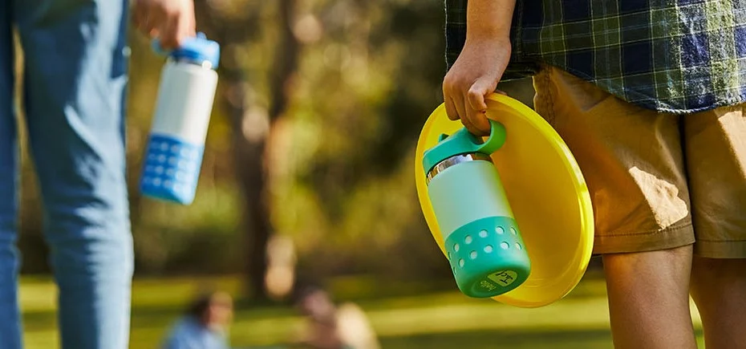
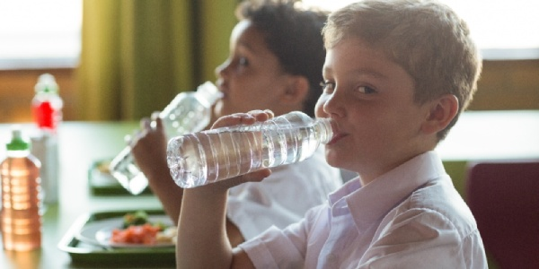

Step 1: Bring your own water bottle
Make sure you have a reusable water bottle filled before entering the campus.
Step 2: Locate water refill stations
Find out where the water refill stations are located inside the campus so you can easily refill your water bottle.
Step 3: Bring water bottle to classes
Bring your water bottle to classes so you can stay hydrated even while in the classroom.
Step 4: Set reminders
Set reminders on your phone to remind yourself to drink water throughout the day.
Step 5: Bring cold beverages
For hot or particularly active days, bring cold beverages that will help you stay hydrated.
Step 6: Be mindful of coffee and other dehydrating drinks
If you're consuming coffee or other beverages that can contribute to dehydration, make sure to accompany it with water to maintain hydration levels.
Step 7: Avoid overly salty foods
Overly salty foods can contribute to dehydration, so choose foods with lower salt content.
Step 8: Take breaks and drink water
During free periods or times without classes, take breaks and drink water to maintain hydration levels.